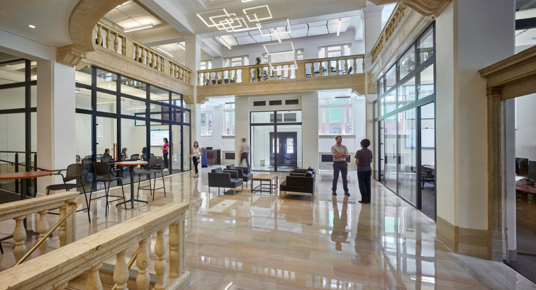

28.02.2020
Разработка интерактивных
систем VR
Рассказываем о принципах разработки аттракционов VR
Виртуальная реальность начиналась именно с аттракционов. В далеком 2016 году именно с американских горок начались первые аттракционы и клубы виртуальной реальности. За эти годы многое изменилось: очки стали с качественными экранами (доходит до качества 4К), провода ушли, а трекинг (отслеживание) движений стал кратно лучше.
Основная особенность разработки современны аттракционов для виртуальной реальности — выбор дополнительных аксессуаров. Очки теперь доступы всем, поэтому обычным приложением никого не удивить. Что же делать? В одном из наших проектов мы использовали профессиональный горнолыжный тренажер, чтобы совместить тренировку и виртуальную реальность.
Благодаря чему получилось ну очень нестандартный аттракцион, так как игроку нужно было полноценно двигаться в VR-очках, получилась симуляция реальной тренировки для спортсменов. В рамках другого проекта мы использовали реальную бензопилу (конечно же с отключенным мотором), к которой прикрепили датчики и сделали ее инструментом в игре для VR.
Получилось намного интереснее, чем просто использовать джойстик. Поэтому при создании по-настоящему крутого VR-аттракциона нужно проявить креативность.
Сейчас эта проблема ушла полностью
Раньше проблема VR-оборудования стояла очень остро при проектировании аттракциона. Сейчас эта проблема ушла полностью, так как есть большое количество очков с полноценным трекингом, которые работают без проводов и сторонних датчиков. Но у этих очков есть и свои ограничения – создать для них фотореалистичную графику не получиться.
Наш список лучших очков для создания VR-аттракционов:
1. Pico Neo 2: качество картинки 4К и мощное “железо” для реализации самых амбициозных проектов
2. Vive Pro c Wi-Fi адаптером: удобное, но дорогое решение. Основное преимущество – возможность получить очень высокую графику.
3. Oculus Quest 2: самый недорогой вариант, но с отсутствием гарантии в России.

Фотография Ивана Петрова